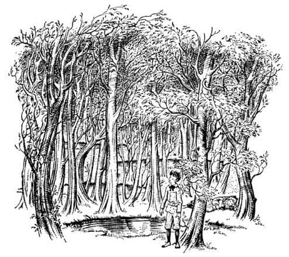
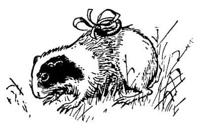

Dünyalar Arasındaki Orman
Andrew Dayı ve çalışma odası aniden yok oldu. Sonra bir an için, her şey birbirine karıştı. Ondan sonra Digory’nin fark ettiği şey, yukarıdan yumuşak, yeşil bir ışığın geldiği ve aşağısının kapkaranlık olduğuydu. Ne herhangi bir şeyin üzerinde dikiliyor, ne oturuyor, ne de yatıyordu. Hiçbir şey ona değmiyor gibiydi. “Suda yüzüyorum sanırım” dedi Digory. “Ya da sualtındayım.” Bu onu bir saniyeliğine korkuttu, ancak aynı anda hemen yukarıya doğru hareket etmekte olduğunu hissetti. Sonra birden başı sudan dışarı, havaya çıktı ve kendini küçük bir gölün kenarındaki düzgün, çimli alana doğru tırmanırken buldu.
Ayağa kalkarken, sualtından çıkan birinin aksine, ne ıslak olduğunu ne de hava almaya çalıştığını fark etti. Giysileri mükemmel bir şekilde kupkuruydu. Bir ormanda, – boydan boya üç metreden fazla olmayan – küçük bir gölün kıyısında duruyordu. Ağaçlar o kadar sık ve yapraklıydı ki gökyüzünü hiç göremiyordu. Yaprakların arasından süzülen ışık yemyeşildi; ancak yukarıda çok güçlü bir güneş olmalıydı, çünkü bu yeşil ışık parlak ve sıcaktı. Görünüşe bakılırsa, düşleyebileceğiniz en sessiz ormandı; ne bir kuş, ne bir böcek, ne bir hayvan, ne de rüzgâr vardı. Neredeyse ağaçların büyüdüğünü hissedecektiniz. Çıktığı gölet, çevredeki tek gölet değildi. Düzinelerce başkaları da vardı – gözlerinin görebildiği kadar uzaklıkta, her üç-beş metrede bir küçük bir göl vardı böyle. Ağaçların kökleriyle suyu içtikleri neredeyse hissediliyordu. Bu orman gerçekte canlıydı. Daha sonra Digory orayı anlatmayı denediğinde hep “Bereketli bir yerdi, erikli kek kadar bereketli” diyecekti.
İşin tuhafı, Digory çevresine bakmadan az önce oraya nasıl geldiğini neredeyse unutmuştu. Her neyse, kesin olan şu ki o, ne Polly’yi, ne Andrew Dayı’yı, ne de annesini düşünüyordu. Biraz olsun heyecan ve merak hissetmiyor, korkmuyordu. Eğer birisi “Sen nereden geldin?” diye soracak olsa, “Ben hep buradaydım” derdi. Hissettikleri böyleydi – sanki hep burada yaşamıştı ve hiçbir şey olmamasına karşın asla canı sıkılmıyordu. Çok uzun zaman sonra söylediği gibi “Bir şeylerin olup bittiği türden bir yer değil. Ağaçlar sürekli büyüyor, hepsi bu.”

Digory ormanı uzun süre inceledikten sonra, birkaç metre ötede bir ağacın dibinde bir kızın yatmakta olduğunu fark etti. Gözleri, sanki uykuyla uyanıklık arasındaymış gibi, yarı aralıktı. Kıza bir şey söylemeden uzun süre baktı. Kız sonunda gözlerini açtı, Digory’ye uzun süre bir şey demeden baktı. Sonra rüyadaymış gibi hoşnut bir sesle konuştu.
“Sanırım seni daha önce gördüm” dedi.
“Ben de öyle düşünüyorum” dedi Digory. “Uzun süreden beri mi buradasın?”
“Oh, hep buradaydım” dedi kız. “En azından – bilmiyorum ama – çok uzun süreden beri.”
“Ben de” dedi Digory.
“Yok canım” dedi kız. “Seni, az önce şu göletten çıkarken gördüm.”
“Evet, sanırım öyle oldu” dedi Digory şaşkınlıkla. “Unutmuşum.”
Ondan sonra uzunca bir süre ikisi de bir şey söylemedi.
“Bana bak” dedi kız daha sonra, “seninle gerçekten daha önce tanışıp tanışmadığımızı merak ediyorum. Aklımda bir şey var – bir tür resim bu kafamdaki – bizim gibi bir oğlanla bir kızın resmi – tamamen değişik bir yerde yaşayıp – değişik şeyler yaptıklarını gösteren bir resim. Belki sadece bir rüyaydı.”
“Sanırım ben de aynı rüyayı gördüm” dedi Digory. “Bir erkek çocuk ve komşusu bir kız – ve tavan kirişlerinde yürümeleri üstüne bir şey. Kızın kirli bir yüzü olduğunu hatırlıyorum.”
“Karıştırıyorsun sen, benim rüyamda erkeğin yüzü kirliydi.”
“Oğlanın yüzünü hatırlayamıyorum” dedi Digory ve sonra ekledi, “Hey! Bu da ne?”
“Ne! Bir kobay” dedi kız. Çimlerde ağır ağır ilerleyen şişman bir kobaydı bu. Kobayın belinde bir bant vardı ve bu banta da parlak sarı bir yüzük bağlanmıştı.
“Bak! Bak!” diye bağırdı Digory. “Yüzük! Ve bak! Senin parmağında da var benimkinde de.”

Kız şimdi doğruldu ve oturdu, sonunda gerçekten ilgisini çekmişti. Hatırlayabilmek amacıyla birbirlerini dikkatle süzüyorlardı. Ve sonra ikisi de aynı anda bağırdı: “Bay Ketterley”, “Andrew Dayı”, o anda kim olduklarını anladılar ve tüm hikâyeyi hatırlamaya başladılar. Birkaç dakika en ince ayrıntılara kadar konuştuktan sonra her şeyin doğrusunu hatırladılar. Digory, Andrew Dayı’nın ne kadar canavarca davrandığını anlattı.
“Şimdi ne yapacağız” dedi Polly. “Kobayı da alıp eve mi döneceğiz?”
“Aceleye gerek yok” dedi Digory uzun uzun esneyerek.
“Bence var” dedi Polly. “Burası çok sessiz. Öyle – öylesine rüya gibi bir yer ki. İnsan neredeyse uykuda gibi. Bir an içimiz geçse, yatıp sonsuza kadar uyuyacağız.”
“Burası çok güzel” dedi Digory.
“Evet, öyle” dedi Polly. “Fakat geri dönmemiz gerek.” Ayağa kalktı ve dikkatle kobaya doğru yürümeye başladı. Fakat sonra fikrini değiştirdi.
“Kobayı burada bıraksak da olur” dedi. “Burada çok mutlu; eve geri götürürsek, dayın ona sadece kötülük edecek.”
“Bahse girerim ki yapar” diye cevapladı Digory. “Bize nasıl davrandığına bak. Bu arada, eve nasıl döneceğiz acaba?”
“Göle girerek sanırım.”
Birlikte gidip göletin kenarında durgun suya bakarak dikildiler. Su, yeşil yapraklı dalların görüntüsüyle doluydu ve bu yüzden çok derinmiş gibi görünüyordu.
“Mayolarımız yok ki” dedi Polly.
“Mayoya ihtiyacımız yok sersem” dedi Digory. “Giysilerimizle gireceğiz. Hatırlamıyor musun, buraya gelirken ıslanmadık.”
“Yüzme biliyor musun?”
“Biraz, ya sen?”
“Şey, çok fazla değil.”
“Yüzmeye ihtiyacımız olacağını sanmıyorum” dedi Digory. “Biz suya dalmak istiyoruz, yüzmek değil.”
Her ikisi de suya atlama fikrini pek sevmemişti ancak birbirlerine bir şey söylemediler. El ele tutuştular ve “Bir – İki – Üç – Atla” deyip atladılar. Fazla miktarda su sıçrattılar ve elbette gözlerini kapatmışlardı. Fakat yeniden gözlerini açtıklarında, hâlâ bu yeşil ormanda el ele durduklarını ve suyun topuklarına ancak eriştiğini fark ettiler. Anlaşılan gölet birkaç santim derinliğindeydi. Yeniden kuru zemine çıktılar.
“Acaba nerede hata yaptık?” dedi Polly korkulu bir sesle. Fakat sizin düşündüğünüz kadar da korkmamıştı, çünkü bu ormanda gerçekten korkmak çok zordu. Burası çok sakin bir yerdi.
“Ah, ben biliyorum” dedi Digory. “Elbette olmazdı. Hâlâ sarı yüzükleri takıyoruz. Yeşil yüzükler insanı geri götürüyor. Yüzükleri değiştirmeliyiz. Cebin var mı? İyi. Sarı yüzüğü sol cebine koy. Bende iki tane yeşil yüzük var. İşte seninki.”
Yeşil yüzükleri taktılar ve yeniden göletin yanına gittiler. Fakat yeniden atlamayı denemeden önce Digory uzunca bir “Oooh” çekti.
“N’oluyor?” dedi Polly.
“Az önce aklıma harika bir fikir geldi” dedi Digory. “Bütün bu diğer göletler neyin nesi?”
“Ne demek istiyorsun?”
“Eğer bu gölete atlayarak kendi dünyamıza dönebiliyorsak, ötekilere atlayarak başka dünyalara gidebilir miyiz? Her birinin dibinde bir dünya olduğunu varsayarsak tabii.”
“Fakat ben dayının, Öbür Dünya ya da Öbür Taraf dediği yerde, ya da ne diyorsa desin, orada olduğumuzu sanıyordum. Sen demedin mi—”
“Of, Andrew Dayı’ya bakma sen” diye sözünü kesti Digory. “Onun, burası hakkında bir şey bildiğini sanmıyorum. Buraya gelmeye hiç cesareti olmadı ki. Sadece tek bir Öbür Dünya’dan söz etmişti. Düşün ki düzinelerce Öbür Dünya var.”
“Yani bu, onlardan sadece biri mi?”
“Hayır, bu ormanın bir dünya olduğuna inanmıyorum. Sanırım burası bir tür ara bölge.”
Polly şaşırmış görünüyordu.
“Görmüyor musun?” dedi Digory. “Hayır, dinle beni. Evdeki kiremitlerin altındaki tüneli düşün. Evlerin hiçbirinde bulunmayan bir oda o. Bir bakıma hiçbir evin bir parçası değil. Fakat bir kez tünele girdin mi, tünel boyunca yürüyebilir ve sıra evlerin herhangi birine girebilirsin. Bu orman da onun gibi bir yer olamaz mı? – dünyaların hiçbirinde olmayan bir yer, fakat bir kez girince her yere gidebileceğin bir yer.”
“Şey, gidebilsen bile—” diye başladı Polly, ama Digory onu duymazlıktan gelip devam etti.
“Ve kuşkusuz bu her şeyi açıklıyor” dedi. “Buranın bu kadar uykuda ve sessiz olmasının nedeni bu. Burada hiçbir şey olmuyor. Evdeki gibi. Evlerde insanlar konuşurlar, bir şeyler yaparlar, yemek yerler. Ara yerlerde, yani duvarların arkasında, tavanların üstünde, tabanların altında, ya da bizim tünelde hiçbir şey olmaz. Fakat tünelden çıktın mı kendini herhangi bir evde bulabilirsin. Sanırım biz buradan her yere gidebiliriz. Çıktığımız suya atlamaya ihtiyacımız yok. En azından şimdilik.”
“Dünyalar Arasındaki Orman” dedi Polly sanki rüyadaymışçasına. “Kulağa hoş geliyor.”
“Haydi” dedi Digory. “Hangisini deneyelim?”
“Bana bak” dedi Polly, “eski gölet yoluyla geri gidebileceğimizden emin olana kadar yeni birini denemeye asla niyetim yok. Geri gidebileceğimizden emin bile değiliz henüz.”
“Evet” dedi Digory, “git de Andrew Dayı’ya yakalan ve biraz olsun eğlenmeden yüzükleri geri alsın. Yok, sağol.”
“Hiç olmazsa kendi göletimizde yolun bir yerine kadar geri gidemez miyiz?” dedi Polly. “Sadece olup olmadığını görmek için. Eğer oluyorsa yüzükleri değiştirip, Bay Ketterley’in odasına varmadan önce buraya geri geliriz.”
“Yolun bir yerine kadar mı?”
“Şey, buraya gelmek zaman almıştı. Tahmin ederim geri gitmek de biraz zaman alacak.”
Digory bunu yapmaya epeyce karşı çıktı ama sonunda razı oldu, çünkü Polly, eskisine geri dönebileceğinden emin olana kadar, kesinlikle yeni dünyalarda araştırma yapmayı reddetmişti. Polly bazı tehlikeler karşısında (örneğin, eşekarıları) en az Digory kadar cesurdu; fakat kimsenin önceden bilmediği şeyleri araştırmakla pek ilgilenmiyordu. Buna karşılık Digory her şeyi bilmek isteyen türden bir insandı, ve büyüyünce, diğer kitaplarımızda karşılaşacağınız ünlü Profesör Kirke olacaktı.
Epeyce tartıştıktan sonra yeşil yüzükleri takıp, (“Yeşil ışık emniyet demektir” dedi Digory, “böylece hangi yüzüğün ne olduğunu hatırlarsın”) el ele tutuşarak atlamaya karar verdiler. Fakat Andrew Dayı’nın çalışma odasına, ve hatta kendi dünyalarına girmek üzere olduklarını anlar anlamaz, Polly “Değiştir!” diye bağıracak ve yeşil yüzükleri çıkarıp, sarı olanlarını takacaklardı. Digory, kendisi “Değiştir” diye bağırmak istemişti ama Polly buna razı olmamıştı.
Yeşil yüzükleri taktılar, el ele tutuştular ve bir kere daha “Bir – İki – Üç – Atla!” diye bağırdılar. Her şey o kadar çabuk oldu ki, olanları anlatmak gerçekten çok zor. Öncelikle, karanlık gökyüzünde hareket eden parlak ışıklar gördüler; Digory bunların hep yıldızlar olduğunu düşünmüştü ve hatta Jüpiter’i yakından – uydusunu görebilecek kadar yakından gördüğüne yemin ediyordu. Fakat neredeyse bir anda altlarında sıra sıra çatılar, bacalar ve Saint Paul’ü gördüler ve Londra’ya bakmakta olduklarını anladılar. Fakat tüm evlerin duvarlarından içerisini görebiliyorlardı. Sonra Andrew Dayı’yı gördüler, belli belirsiz bir gölge gibiydi, ama zaman geçtikçe sanki netlik ayarı yapar gibi belirginleşiyordu. Andrew Dayı tamamıyla gerçek olmadan önce Polly “Değiştir!” diye bağırdı ve yüzükleri değiştirdiler. Bizim dünyamız bir rüya gibi uzaklaştı ve başları suyun üstüne çıkıp kıyıya tırmanana kadar yukarıdaki yeşil ışık giderek koyulaştı. Şimdi, eskisi gibi, parlak, yemyeşil ve sakin orman çevrelemişti onları. Bütün bunlar bir dakika içinde olup bitmişti.
“İşte!” dedi Digory. “Bu çok iyi. Şimdi maceraya gelelim. Bu göletlerin herhangi biri olur. Haydi. Şunu deneyelim.”
“Dur!” dedi Polly. “Bu göleti işaretlemeyecek miyiz?” Birbirlerine baktılar ve Digory’nin yapmak üzere olduğu korkunç şeyin farkına varınca ikisi de bembeyaz kesildiler. Çünkü ormanda bir sürü gölet vardı ve tüm göletler ve ağaçlar birbirinin aynıydı. Eğer bizim dünyamıza giden göleti işaretlemeden giderlerse, onu yeniden bulma şansları yüzde bir bile olmayacaktı.
Digory, çakısını çıkarıp suyun kenarındaki çimenden uzunca bir parçayı kestiğinde elleri titriyordu. Mis gibi kokan toprak, kızıla çalan kahverengiydi ve yeşilin yanında çok güzel görünüyordu. “İçimizden birinin düşünmesi iyi bir şey” dedi Polly.
“Fazla böbürlenme” dedi Digory. “Haydi gel, diğer göletlerden birinde ne olduğunu görmek istiyorum.” Polly ona ters bir cevap verdi. Digory’nin cevabı daha da kötüydü. Tartışmaları ara ara dakikalarca devam etti ancak hepsini buraya yazmak çok sıkıcı olur. Biz onların, sarı yüzüklerini takmış, korkulu yüzleri ve hızla çarpan kalpleriyle o bilinmeyen göletin kenarında dikilip el ele tutuşarak yeniden “Bir – İki – Üç – Atla” dedikleri ana gelelim.
“Cup!” Yine yüzükler işe yaramamıştı. Bu gölet de sadece bir su birikintisi gibi görünüyordu. Başka bir dünyaya gitmek yerine, sadece ayaklarını ikinci kez ıslatmışlardı o sabah (eğer sabah idiyse; çünkü Dünyalar Arasındaki Orman’da zaman hep aynı gibi görünüyordu).
“Aman Allahın belası!” diye bağırdı Digory. “Şimdi nerede hata yaptık? Sarı yüzüklerimizi taktık işte. Dış dünyalara gitmek için sarı yüzükleri takmamızı söylemişti.”
Fakat gerçek şuydu ki, Dünyalar Arasındaki Orman hakkında hiçbir şey bilmeyen Andrew Dayı, yüzükler hakkında da yanlış bilgiye sahipti. Sarı yüzükler “dışarı” gidiş, ve yeşil yüzükler de “geri” geliş için değildi, en azından onun düşündüğü gibi değil. İkisinin de yapıldıkları madde ormandan gelmişti. Sarı yüzüklerin maddesi insanı ormana geri götürme gücüne sahipti; bu madde kendi evine, aradaki yere geri dönmek istiyordu. Fakat yeşil yüzüklerin maddesi kendi evini terk etmek isteyen maddeydi; böylece yeşil yüzük insanı ormandan başka bir dünyaya götürebilirdi. Görüyorsunuz ki Andrew Dayı, gerçekten anlamadığı şeylerle uğraşıyordu; birçok büyücü böyledir. Kuşkusuz Digory gerçeği bu açıklığıyla, epey zaman geçene kadar anlayamamıştı. Fakat sorunu yeniden konuştuklarında, ne olacağını görmek için yeşil yüzüklerini aynı gölette denemeye karar verdiler.
“Sen varsan, ben de varım” dedi Polly. Böyle söylemişti, çünkü içten içe kesinlikle emindi ki her iki yüzük de bu yeni gölette işe yaramayacaktı ve başlarına gelebilecek en kötü şey yeniden ıslanacak olmalarıydı. Digory’nin de aynı şeyi düşünüp düşünmediğinden emin değilim. Her neyse, yeşil yüzüklerini takıp göletin kıyısına gelerek el ele tutuştuklarında, kesinlikle ilk seferinden daha fazla neşeli ve daha az ciddiydiler.
“Bir – İki – Üç – Atla!” dedi Digory. Ve atladılar.